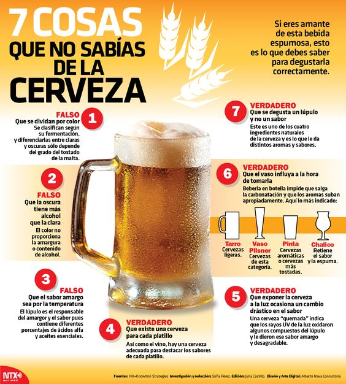

¿SABÍAS QUE?
1. ¿Sabrías como catar una cerveza correctamente?

2. ¿Con qué comidas acompañar cada tipo de cerveza?
{kind=link}
En esta imagen podemos observar que comidas se llevan mejor con nuestros estilos de cerveza favoritos, para que, la próxima cerveza que tomes vaya acompañada de su manjar correspondiente.
3.Helado de cerveza.
{kind=link}
Seamos claros, ¿que es lo más refrescante que puedas beber en verano? la cerveza, ¿y lo mas refrescante que puedas comer? el helado, y... ¿que te impide unirlos? NADA, así que ya sabes, prueba esta gran receta que aúna lo bueno de lo dulce con lo mejor de lo amargo.
4.¿Cómo servir una buena cerveza?
{kind=link}
Y así es como se sirve en condiciones una cerveza, nada de agitar el vaso de arriba abajo (aunque no todos los tipos de cerveza se sirven de este modo, es el más generalizado para las cervezas de barril), os lo dice alguien que entiende más que vosotros de cerveza (hablo del Sr.Heineken no de mí).
5.Cómo pedir cerveza en 26 idiomas diferentes.
{kind=link}
Porque lo importante es que no falte la cerveza vayas donde vayas.
6. 7 mitos sobre la cerveza, ¿reales o ficticios?.

{kind=link}